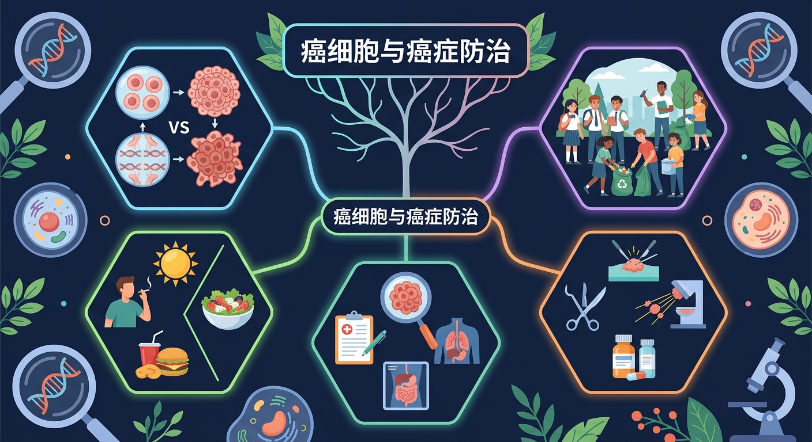
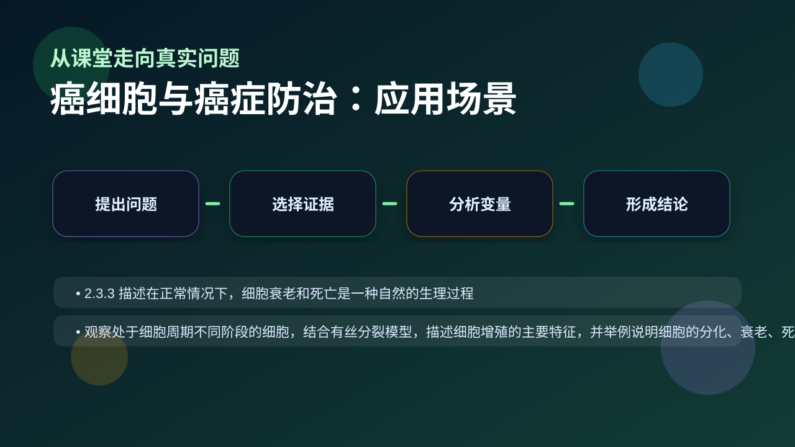

Gallery v1.0.0 · skill v7.14
结构怎样决定功能，细胞层面的变化怎样影响个体生命过程？

已经知道：此前已学过细胞分裂周期、基因控制蛋白质合成等知识，了解正常细胞增殖受接触抑制调控，并初步接触过基因突变概念
但问题是：学生常混淆原癌基因与抑癌基因的功能差异，难以理解为何多基因突变积累才会导致癌变，且对转移灶形成与血管新生的关系存在认知盲区
所以学：当医生向患者解释病理报告中的'HER2阳性'或'BRCA1突变'时，需要准确说明这些基因变异如何打破细胞周期平衡，本课将培养这种临床思维分析能力
先选一个卡点。后面的例子、互动和 AI 学伴都会围绕它给你最小提示。
选择或输入后，本课会围绕你的问题展开。
下列哪项是癌细胞最显著的特征？
现象入口：癌细胞可不受接触抑制持续增殖，并能侵袭周围组织甚至转移。
机制解释：癌变是原癌基因和抑癌基因等多基因、多步骤改变积累的结果，导致细胞周期调控失常。
证据抓手：证据来自细胞增殖曲线、基因突变检测、肿瘤标志物和组织病理切片。
变量线索：致癌因子、DNA损伤修复、细胞周期检查点和免疫监视。做题时先找变量，再判断机制，最后写证据。
观察癌细胞在显微镜下的形态异常和无限增殖现象
分析细胞膜糖蛋白减少与癌细胞转移能力的关系
阐明原癌基因激活和抑癌基因失活的协同致癌机制
应用致癌因子分类解释吸烟与肺癌的关联
情境：吸烟增加肺癌风险，不是因为烟雾“直接长出癌”，而是长期增加DNA损伤和突变概率。
作答路径：长期吸烟者肺癌高发（现象）→烟雾中苯并芘等化学致癌因子损伤DNA（机制）→研究发现吸烟者p53抑癌基因突变率显著升高（证据）
评分提醒：典型失分：混淆原癌基因（促进增殖）与抑癌基因功能；将单一突变等同于癌变；忽视糖蛋白减少与转移的关联
旋转 3D 分子模型，观察结构层级。请把结构特点和 癌细胞与癌症防治 中的功能解释对应起来：结构不是装饰，而是功能的证据。
💡 操作提示：拖拽旋转模型，思考“形状、空间位置、结合位点”如何影响生命活动。
细胞癌变是原癌基因与抑癌基因多次突变累积的结果——单次突变通常不足以致癌，这解释了癌症发病率随年龄上升。
💡 探究任务：观察突变个数与相对风险的关系，解释为什么癌症多见于老年人、为什么防癌要减少致癌因子暴露。
把癌症归因于单一原因或认为癌细胞只是“长得快”，忽略侵袭、转移和调控失常。
只说“增加/减少”不够，要写清改变的是 致癌因子、DNA损伤修复、细胞周期检查点和免疫监视 中的哪一个。
没有实验现象、曲线趋势或结构证据，答案就像猜测。
关于原癌基因的正确描述是？
视频用语音和动态画面回顾本课主线：问题情境 → 机制模型 → 证据判断 → 迁移应用。

分析癌症预防和靶向治疗，要看改变了哪条细胞调控通路。
提交后会检查你的解释是否包含现象、机制和变量。
如果学生只说出概念名称，继续追问：题干里哪个证据最关键？这个证据对应分子、细胞、个体还是生态系统层级？如果改变 致癌因子、DNA损伤修复、细胞周期检查点和免疫监视 中的一个条件，结果会怎样？这三问能把答案从背诵推进到科学解释。
列举三种致癌因子类型并各举一例
分析乙肝病毒感染为何易导致肝癌，需包含关键基因突变机制
设计实验验证某化学物质是否通过影响原癌基因表达诱发癌变
下列哪项是癌细胞区别于正常细胞的最核心特征？
学习小结：癌细胞因原癌/抑癌基因突变累积导致无限增殖和转移，防治需减少致癌因子接触并定期筛查突变。
先独立作答，再点选项查看对错与错因。
PET-CT检查中癌细胞显像的原理主要是基于
下列最可能出现在癌前病变中的现象是
针对CA19-9指标的正确理解是
癌细胞转移时需突破____屏障才能进入血管
答案：基底膜
这是转移的第一道结构障碍
抑癌基因TP53突变会导致____功能丧失
答案：DNA修复
该基因编码的p53蛋白负责监控基因组完整性
关于细胞癌变的本质最准确的是
分析临床常用抗癌药物作用机理数据表
❓ 为什么癌症听起来这么可怕，但有些人却能活很久？
❓ 癌细胞和正常细胞到底有啥不一样？
❓ 听说熬夜会得癌症，是真的吗？
学完这一课，这些问题你都能自信地回答。
✅ 早期癌症5年存活率超90%
💡 混淆癌症分期概念
✅ 均衡饮食才是关键，单一食物无效
💡 夸大食物功效
口诀：癌变三特征：疯长、乱跑、变脸快
类比：癌细胞像违章建筑：乱扩建（增殖）、占通道（转移）、不验收（异型）